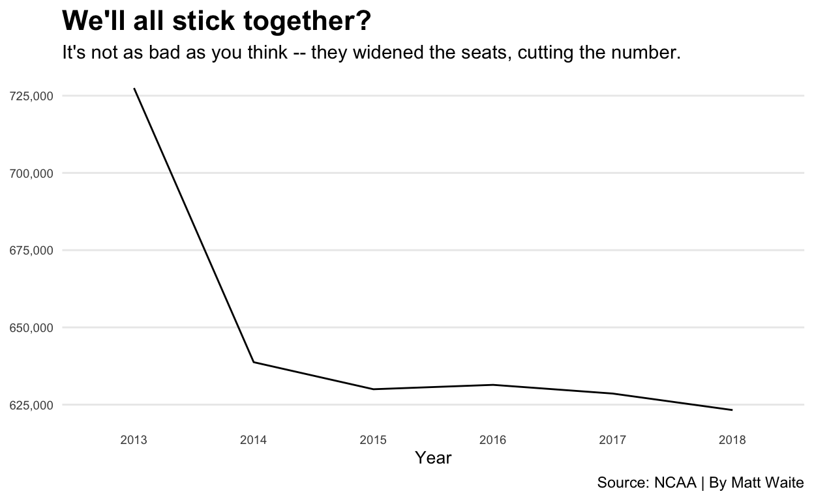

Sometimes long data needs to be wide, and sometimes wide data needs to be long. I’ll explain.
You are soon going to discover that long before you can visualize data, you need to have it in a form that the visualization library can deal with. One of the ways that isn’t immediately obvious is how your data is cast. Most of the data you will encounter will be wide – each row will represent a single entity with multiple measures for that entity. So think of states. Your row of your dataset could have the state name, population, average life expectancy and other demographic data.
But what if your visualization library needs one row for each measure? So state, data type and the data. Nebraska, Population, 1,929,000. That’s one row. Then the next row is Nebraska, Average Life Expectancy, 76. That’s the next row. That’s where recasting your data comes in.
We can use a library called tidyr to pivot_longer or pivot_wider the data, depending on what we need. We’ll use a dataset of college football attendance to demonstrate.
For this walkthrough:
First we need some libraries.
library(tidyverse)library(tidyverse)Now we’ll load the data.
attendance <- read_csv("http://mattwaite.github.io/sportsdatafiles/attendance.csv")attendance <- read_csv("http://mattwaite.github.io/sportsdatafiles/attendance.csv")As per usual, let’s take a look at this with head.
head(??????)head(attendance)As you can see, each row represents a school, and then each column represents a year. This is great for calculating the percent change – we can subtract a column from a column and divide by that column. But later, when we want to chart each school’s attendance over the years, we have to have each row be one team for one year. Nebraska in 2013, then Nebraska in 2014, and Nebraska in 2015 and so on.
To do that, we use pivot_longer because we’re making wide data long. pivot_longer is a function, much like summarize and filter in that it takes input. In this case, pivot_longer needs three things: what columns are getting pivoted, and what we need to name the new columns that are getting pivoted. Those names are called names_to and values_to because one is going to be a label and one is going to be a … value.
Given our data, we have Intitution, Conference, and then a bunch of columns that are years. What we want to see is something like Institution, Conference, Year, Attendance. That way, we get Nebraska, Big Ten, 2017, 12345 on one row. Then the next row is Nebraska, Big Ten, 2018, 12345. And so on. Instead of one row, one institution, it’s that each year for each institution is it’s own row. If we have six years of data, we have six rows of Nebraska. And six rows of Iowa, god forbid.
The hardest part of pivoting longer is telling it which columns to pivot. You spell this out in cols. With simpler datasets, you can just say which ones. The columns we want to pivot are the ones with the numbers – the year columns. There are some shortcuts to help us. Since all of the columns we want to make rows start with 20, we can use that pattern in our cols directive . Then we give that column a name – Year – and the values for each year need a name too. Those are the attendance figure, so let’s call those Attendance. Replace the all caps here and you can see how it works.
NAMEOFDATA %>% pivot_longer(cols = starts_with("20"), names_to = "????", values_to = "??????????")attendance %>% pivot_longer(cols = starts_with("20"), names_to = "Year", values_to = "Attendance")We’ve gone from 150 rows to 900, but that’s expected when we have 6 years for each team.
We can reverse this process using pivot_wider, which makes long data wide.
Why do any of this?
In some cases, you’re going to be given long data - six Nebraskas and six Iowas and six Minnesotas and so on – and you need to calculate some metric using two of the years – a percent change for instance. You’ll need to make the data wide to do that – one row of Nebraska with all the data side by side. You might then have to re-lengthen the data now with the percent change. Some projects require you to do all kinds of flexing like this. It just depends on the data.
Fortunately, pivoting wider is easier than pivoting longer. We don’t have to specify what columns are going to be pivoted in a cols directive. We do that in names_from and values_from. And those names and values? Those are actual column names instead of text, so no quote marks.
Let’s assign what we did above and create something called longdata. Then we’ll use pivot wider to make our long data wide again. To pivot_wider, we just need to say where our column names are coming from. The hint for what those columns are called? In this case, look in pivot_longer.
???????? <- NAMEOFDATA %>% pivot_longer(cols = starts_with("20"), names_to = "????", values_to = "??????????")
longdata %>% pivot_wider(names_from = ????, values_from = ??????????)longdata <- attendance %>% pivot_longer(cols = starts_with("20"), names_to = "Year", values_to = "Attendance")
longdata %>% pivot_wider(names_from = Year, values_from = Attendance)And just like that, we’re back.
This matters because certain visualization types need wide or long data. A significant hurdle you will face for the rest of the semester is getting the data in the right format for what you want to do.
So let me walk you through an example using this data.
Let’s look at Nebraska’s attendance over the time period. In order to do that, I need long data because that’s what the charting library, ggplot2, needs. You’re going to learn a lot more about ggplot later, so don’t worry about that now.
longdata <- attendance %>% pivot_longer(cols = starts_with("20"), names_to = "Year", values_to = "Attendance")
nebraska <- longdata %>% filter(Institution == "Nebraska")
ggplot(nebraska, aes(x=Year, y=Attendance, group=1)) +
geom_line() +
scale_y_continuous(labels = scales::comma) +
labs(x="Year", y="Attendance", title="We'll all stick together?", subtitle="It's not as bad as you think -- they widened the seats, cutting the number.", caption="Source: NCAA | By Matt Waite", color = "Outcome") +
theme_minimal() +
theme(
plot.title = element_text(size = 16, face = "bold"),
axis.title = element_text(size = 10),
axis.title.y = element_blank(),
axis.text = element_text(size = 7),
axis.ticks = element_blank(),
panel.grid.minor = element_blank(),
panel.grid.major.x = element_blank(),
legend.position="bottom"
)